| Travail | Chapitre | |
|---|---|---|
| 1 | Bibliographie | Bibliographie |
| 2 | Définir la question | Introduction |
| 3 | Écrire le protocole | Matériel & Méthodes |
| 4 | Recueil des données | |
| 5 | Analyse interne | Résultats |
| 6 | Analyse externe | Discussion |
| 7 | Finir de rédiger | Introduction |
Écrire sa thèse sans se fatiguer
C’est possible
Philippe MICHEL
USRC - Hôpital NOVO
De quoi on parle ?
Une idée, une thèse :
Un sujet Facteurs de risque d’escarre en réanimation
Une question État avant ?
Un critère Alitement prolongé (> 7j)
Des outils inadaptés
Au travail !
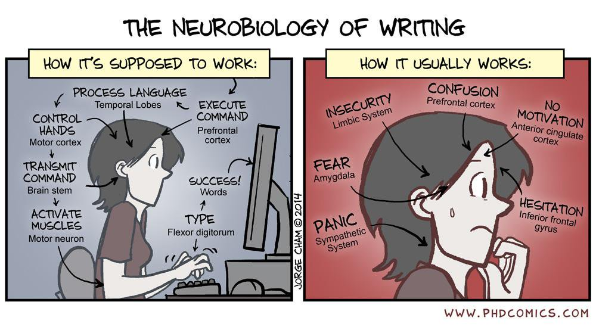
Ordre du travail
Pressure Ulcer ICU
GOOGLE 7 640 000 références
GOOGLE SCHOLAR 34 000 références
MEDLINE 679 références
+ filtres 176 références
Que lire ?
Article original
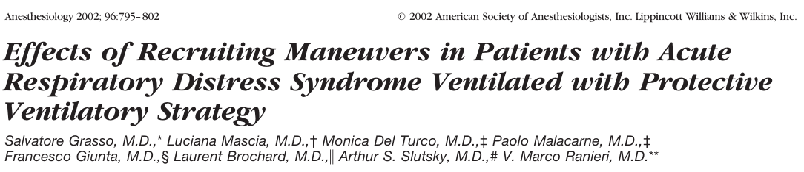
- Le plus intéressant
- Présente les résultats d’un travail original
- Proposé par l’auteur à la revue
- Souvent très (trop ?) pointu
Proposé par l’auteur ?
Et si on changeait les critères ?
ClinicalTrial.gov
- Dépôt des points principaux d’un essai avant le début de l’étude
- Quasi obligatoire
Revue de la littérature
Comparison of early versus late initiation of renal replacement therapy in critically ill patients with acute kidney injury: a systematic review and meta-analysis.Critical Care 2011, 15:R72
Conclusion Earlier institution of RRT in critically ill patients with AKI may have a beneficial impact on survival. However, this conclusion is based on heterogeneous studies of variable quality and only two randomized trials. In the absence of new evidence from suitably-designed randomized trials, a definitive treatment recommendation cannot be made.
Méta-analyse
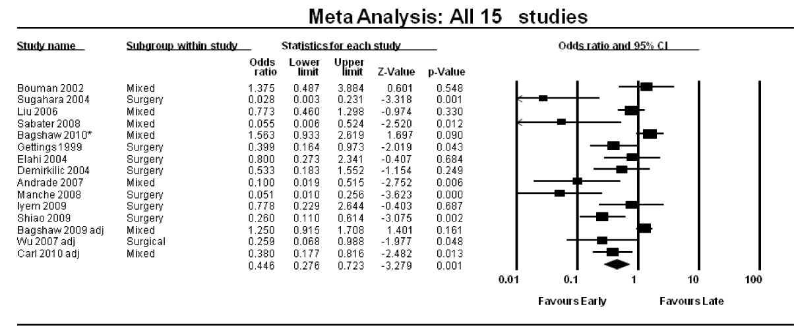
Conférence de consensus
Recommendations Formalisées d’experts
- Revue de la littérature qui se veut exhaustive
- Plusieurs auteurs donc plus objective ?
- Mises à jour prévues.
Evidence Based Medicine
Niveaux de preuve
| 1 | Grands essais comparatifs randomisés avec résultats méthodologiquement indiscutables | Niveau A |
| 2 | Petits essais comparatifs randomisés et grands essais avec résultats incertains | Niveau B |
| 3 | Essais comparatifs non randomisés avec groupe contrôle contemporain, suivis de cohortes | Niveau B |
| 4 | Essais comparatifs non randomisés avec groupes contrôles historiques, études cas-témoin | Niveau B |
| 5 | Pas de groupe contrôle, essais contrôlés sur des critères intermédiaires, séries de patients, consensus professionnels, opinions d'experts | Niveau C |
Conférence d’experts
La conf. de consensus du pauvre
- Que valent les experts ???
- Niveau C
Où chercher ?
MEDLINE
Base de donnée bibliographique sur :
- la médecine PUBMED
- surtout le génome PUBGEN
Système de recherche
Descripteurs MESH
- Plus complexe, plus précise.
par Mots-clefs
Méthode par défaut
- Rapide, simple
- Mots clefs ?
MEDLINE

MEDLINE
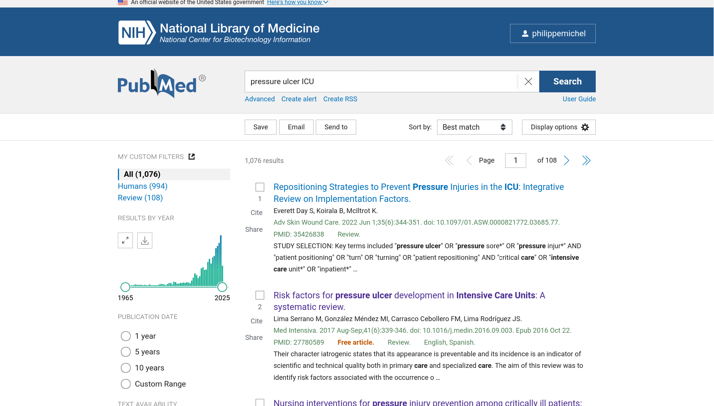
EN FRANÇAIS

GOOGLE SCHOLAR
ZOTERO
?
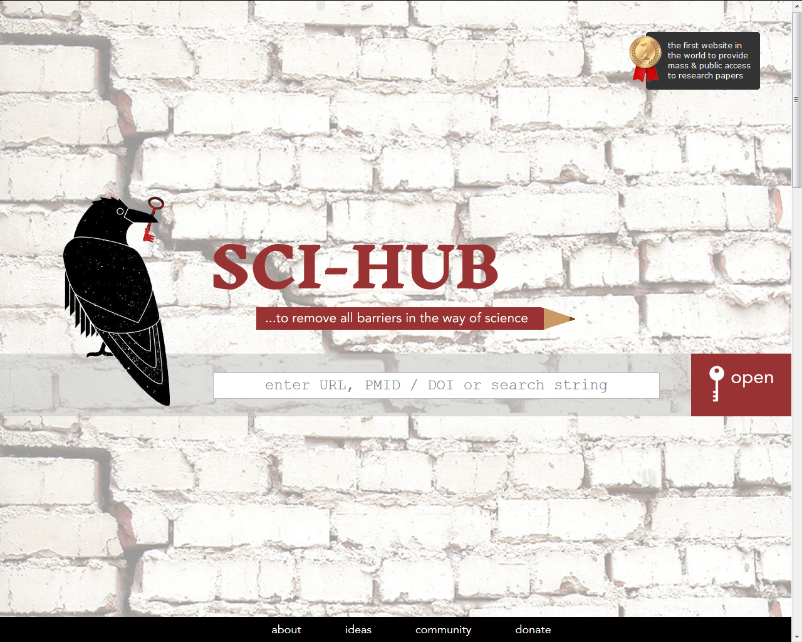
Dernier contrôle
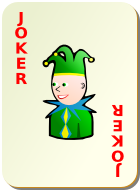
Tout vous paraît correct ?
Il vous reste deux dernières chances
- Correspondance
- Éditorial
Quelle étude ?
Études contrôlées
Tout est sous contrôle
- Nb de patients
- Qui reçoit quoi
- Les mesures, surveillances
- …
Randomisé en double aveugle
BMJ 2003;327:1459
Parachute use to prevent death and major trauma related to gravitational challenge: systematic review of randomised controlled trials
Études contrôlées
Études de molécules
ÉTUDE RANDOMISÉE CONTRE … EN DOUBLE AVEUGLE
Autres modalités de traitement
Études randomisée en simple aveugle…
Méthodes diagnostiques
Procédures spécifiques
Études observationnelles
- Suivi de population (cohorte)
- Études cas / témoins
- Enquètes one day
- Sondages
- Études rétrospectives
Un peu d’aide…
Thérapeutique
CONSORT CONsolidated Standards Of Reporting Trial
Diagnostic
STARD Statement for Reporting Studies of Diagnostic Accurary
Études observationnelles
STROBE Strengthening the Reporting of Observational Studies in Epidemiology
STROBE
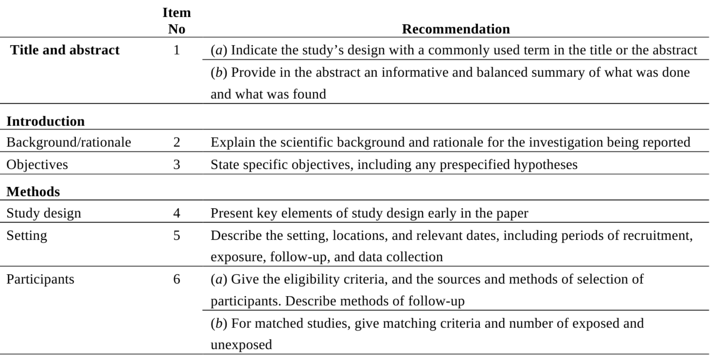
Éthique & Lois
Comité d’Éthique
CNIL
CPP
RIPH
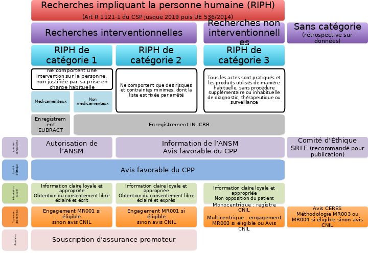
On rédige
IMRAD
Plan immuable
- Introduction
- Methods
- Results
- And
- Discussion
IMRAD

Introduction
Il était une fois…
- Motif du travail au vu de la littérature.
- Les hypothèses
Matériel & Méthodes
Tout doit y être précisé :
- Type de l’étude
- Population
- Traitements, méthodes diagnostiques…
- Critères de jugement
- Tests statistiques utilisés
du Lourd
Patient Selection Twenty-two patients with ARDS were recruited from the intensive care units (ICUs) of the Di Venere, Policlinico (University of Bari), and S. Chiara (University of Pisa) hospitals. The review boards of ;all three hospitals approved the research protocol, and informed consent was obtained from all patients or next of kin. Inclusion criteria were age >18 yr and diagnosis of ARDS. Exclusion criteria were cardiogenic pulmonary edema (clinically suspected or pulmonary artery occlusion pressure > 18 mmHg), history of ventricular fibrillation or tachyarrhythmia, unstable angina or myocardial infarction within the preceding month, preexisting chronic obstructive pulmonary disease, mean arterial pressure (MAP) < 65 mmHg (despite attempts to increase blood pressure with fluid and vasopressors, as clinically indicated), anatomic chest wall abnormalities, chest tube with persistent air leak, pregnancy, and intracranial abnormality.
All patients were intubated and ventilated with a Siemens Servo Ventilator 300 (Siemens Elema AB, Solna, Sweden). The investigation was performed in the semirecumbent position after sedation (diazepam, 0.1–0.2mg/kg, and fentanyl, 2–3{ng/Kg) and paralysis (vecuronium, 4–8 mg). A physician not involved in the research aspects of the study was always present to provide patient care.
La science est reproductible
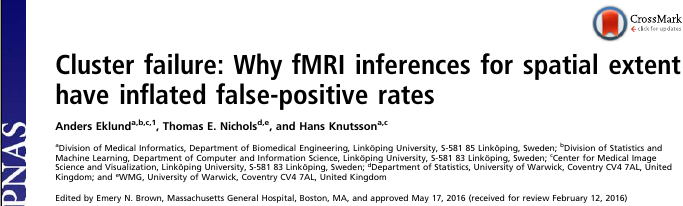
40 000 articles invalidés
ou 3 900…
Nombre de patients
Le calcul doit être fait a priori (calcul de puissance).
Strict minimum : 30 par groupe
N’a de sens que s’il y a un test principal avec une hypothèse claire
Faire du chiffre !
ISIS 2
Aspirine & reperfusion dans l’IdM en phase aiguë
Lancet 1986
16 027 cas
GUSTO I
NEJM 1993
Interêt de la reperfusion précoce dans l’IdM
41 021 cas
Grippe
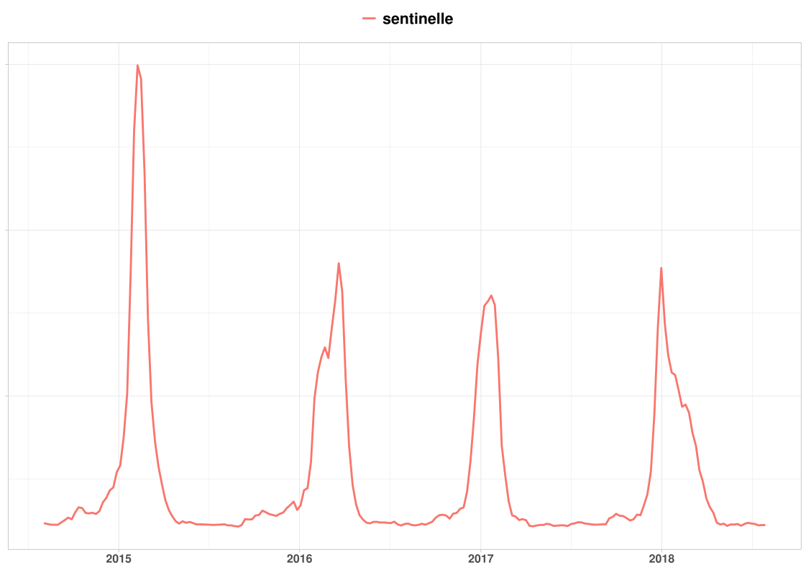
Grippe
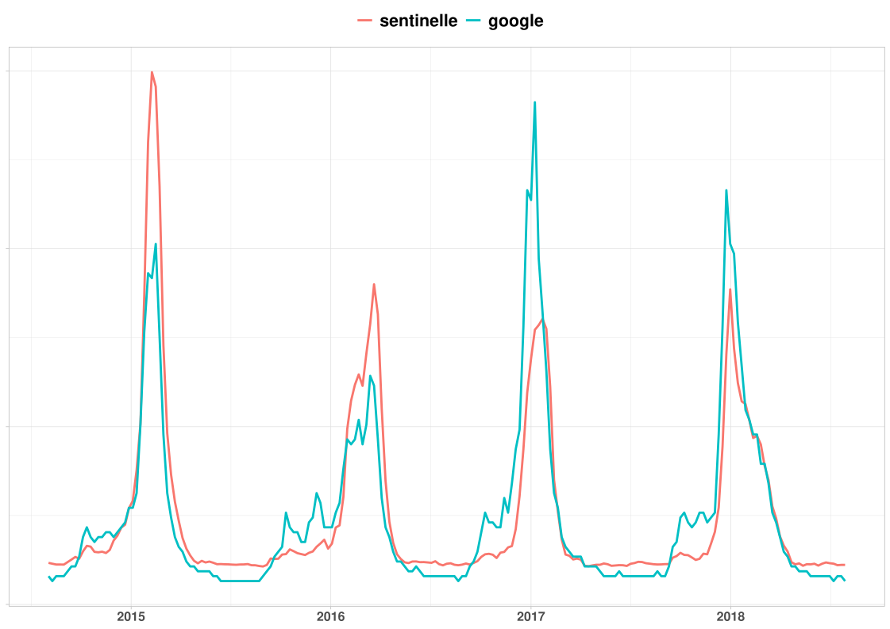
Définir la population
2 écueils possibles
Population très large
- Tous les patients vus aux urgences pour douleur thoracique
Population trop serrée
- Patients de 40 à 75 ans,
- douleur rétrosternale gauche <3 h
- troponine > 50 mg/mL
Les sous groupes ?
Aucune conclusion ne doit être portée sur un résultat de sous-groupe
VS-AI vs CPAP dans l’OAP
- Supériorité globale de la VS-AI;
- Un sous groupe (IdM) s’aggravait en VS-AI…
Mehta 1997
Traitements utilisés
Enfin de la clinique !
- Vérifier si le traitement proposé est conforme à ce que vous attendiez, proche de votre pratique…
- C’est le protocole que vous appliquerez si l’étude vous convainc.
Partie statistique
Statistics Data are expressed as mean ± standard deviation of the mean. Data within groups were compared by analysis of variance for repeated measures with a Bonferroni correction. If significant (p < 0.05), the values at different experimental conditions were compared with those at baseline with use of a paired t test, as modified by Dunnett. Comparisons of data between groups were performed at each experimental condition by the Fisher exact test for categorical variables and the Wilcoxon test for continuous variables. Regression analysis was performed with the least-squares method. Analysis was carried out with the StatView software package (Abacus, Berkeley, CA).
Résultats
Les résultats,
Tous les résultats,
Rien que les résultats
Quelques tableaux
- Description de la population
- Comparaison des deux groupes
Quelques figures
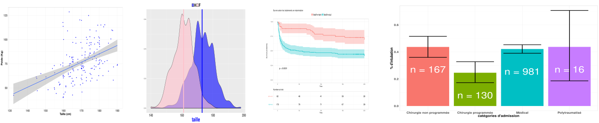
des petits dessins
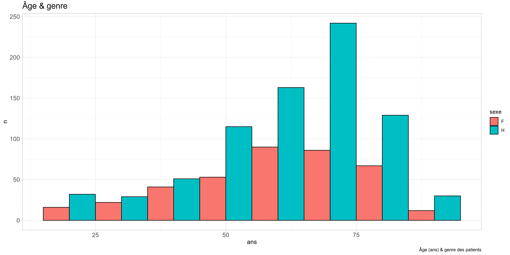
des petits dessins
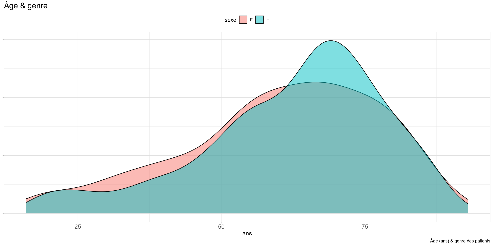
des petits dessins
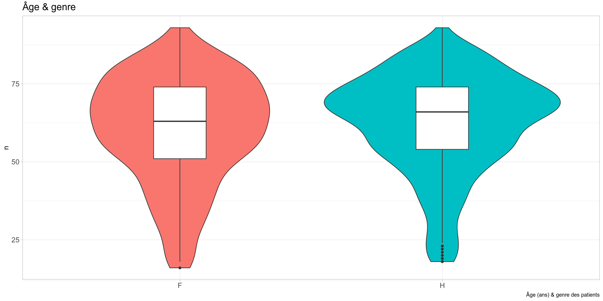
des petits dessins
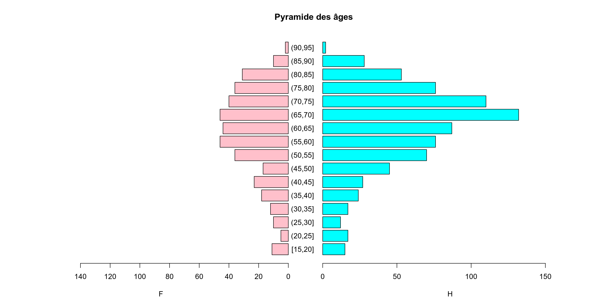
Discussion
Une revue de la littérature
Doit mettre en évidence les conclusions pratiques de l’étude mais aussi ses points faibles
- Mon étude montre que …
- Mais elle a ses limites :
- Patients très âgés;
- …
Conclusion
- Résumé de la discussion
- Fin ouverte
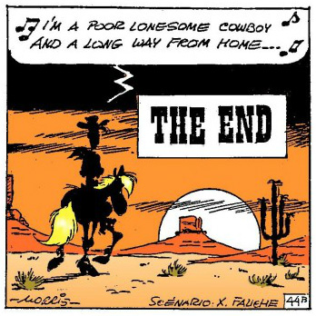
Des variables ?
Mais quelle est la question ?
Questions & Variables
VARIABLES
Variable de tri Escarre présente
OUI/NON
Variable principale Alitement prolongé OUI/NON
Variables explicatives Age, Sexe, IGS II etc.
Critère de jugement
Ou variable de tri…
Simple
- Vivant / Mort
- Rechute / Pas rechute
Critère composite / score
- Rechute + décès
- ± Autonomie…
Liste de variables
| nom | abrégé | type | valeurs | |
|---|---|---|---|---|
| 1 | Âge du patient | age | entier | 18-110 |
| 2 | Date d’admission | dateadm | date | dd/mm/yyyy |
| 3 | Sexe | sexe | facteur | F / M |
| 4 | BMI | bmi | entier | 10-60 Kg/m |
| 5 | IGS II à l’admission | igsadm | entier | 6-150 |
| 6 | Oxygénothérapie | oxy | entier | 0-20 L/min |
| 7 | Ventilation invasive | vi | facteur | oui/non |
| 8 | Sédation | sedation | facteur | oui/non |
| 9 | Curarisation | curarisation | facteur | oui/non/nsp |
Variables en pratique
html
<p> Âge
<input 'NUMBER'
name = 'age'
min = '18'
max = '110'>
</p> Âge
Variables en pratique : R
Welch Two Sample t-test
data: age by escarrej
t = -0.29494, df = 357.56, p-value = 0.7682
alternative hypothesis: true difference in means between group non and group oui is not equal to 0
95 percent confidence interval:
-2.658627 1.965186
sample estimates:
mean in group non mean in group oui
61.74533 62.09205 Organiser son tableau
Un grand rectangle
- Un seul tableau (si possible)
- Variables en colonne, individus/mesures en ligne
- Que les données, pas de calcul etc.
- Une ligne de titre, titres uniques
- Pas de case vide
Titres, Sujets Variables
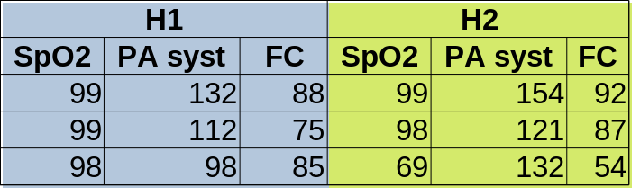
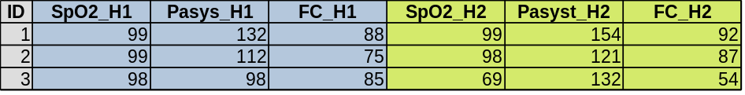
Titres, Sujets Variables
Les données : pas si facile…
| Norme | Ecriture |
|---|---|
| Français | 25/12/2021 |
| Français | 25/12/21 |
| USA | 2021-12-25 |
| ISO 8601 | 2021-12-25 |
Que faire des données ?
Tableau descriptif
Escarre
|
|||
|---|---|---|---|
| non N = 1,019 |
oui N = 239 |
p-value | |
| alite_avant | 0.012 | ||
| non | 737 (80%) | 159 (72%) | |
| oui | 184 (20%) | 61 (28%) | |
| age | 65 (53, 74) | 65 (54, 73) | 0.6 |
| igs | 40 (28, 54) | 45 (31, 57) | 0.009 |
| albumine | 27 (22, 32) | 25 (21, 30) | 0.016 |
| 1 n (%); Median (Q1, Q3) | |||
| 2 Pearson's Chi-squared test; Wilcoxon rank sum test | |||
Il n’y a pas que p<5 % !
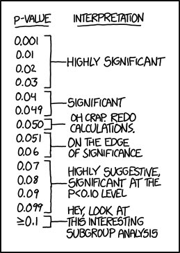
- Moyennes, écart-type
- % ± Intervalle de confiance
- Médiane, quartiles
Data mining
- Clustering
- Analyse factorielle
- Machine Learning
Des tests…
- t de Student
- \(\chi^2\)
- test non paramétrique de Wilcoxon
- ANOVA
- Coef de corrélation (Spearman ou Pearson)
- test de Cochran-Mantel-Haenszel
.small[\[f(x) = \frac{1}{\sqrt{2 \pi\sigma^{2}}}e^{\frac{-(x-\mu)^2}{2\sigma^{2}}}\]]
.small[\[t^{n-1}_{1-\alpha/2} = \frac{|m_1-m_2|}{S^2\sqrt{\frac{1}{n_1}+\frac{1}{n_2}}}\]]
\[\xi_{CMH} = { [ {\sum_{i=1}^K (A_i- {N_{1i} M_{1i}\over T_i}):::^2 } \over {\sum_{i=1}^K {N_{1i}N_{2i}M_{1i}M_{2i} \over T_i^2(T_i-1)}}}\]
Analyse simple
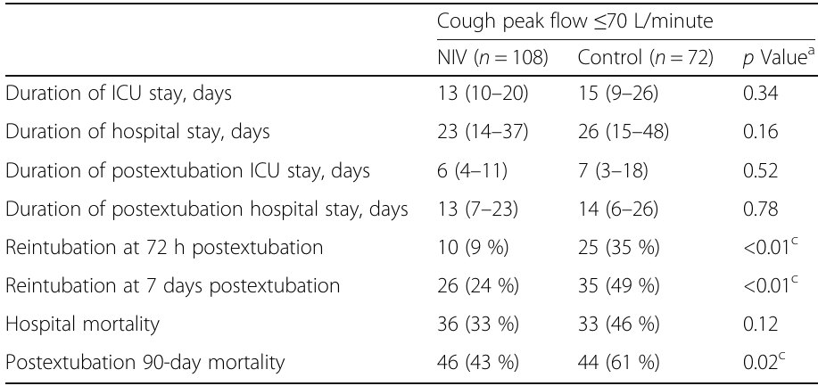
Un ensemble de données
Régression (logistique ou linéaire ou …)
\[\text{escarre} = f_1(\text{age})+f_2(\text{alitement})+f_3(\text{igs2})+...+\varepsilon\]
.center[
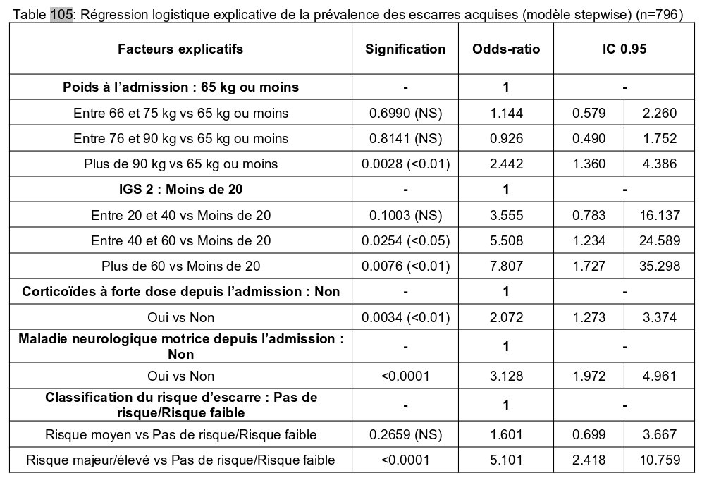
]Un peu de recul…
\[IC_{95}= p \pm z_{\alpha/2}\sqrt{\frac{p(1-p)}{n}}\]
\[\mathbb{P}\left(-z_{\alpha/2} \leq
\frac{\frac{X}{n}-p}{\sqrt{\frac{p(1-p)}{n}}} \leq
z_{\alpha/2}\right)\thickapprox 1-\alpha\]
Un peu de recul…
\[IC_{95}= p \pm z_{\alpha/2}\sqrt{\frac{p(1-p)}{n}}\]
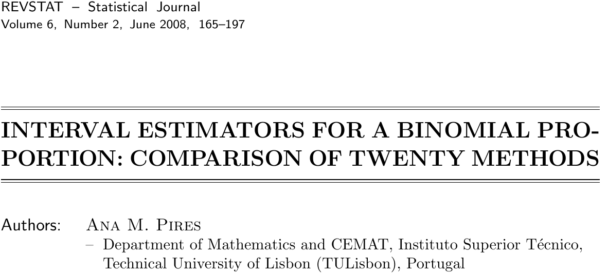
p< 5 ???
.right[ ]
]
p< 5 ???
.right[
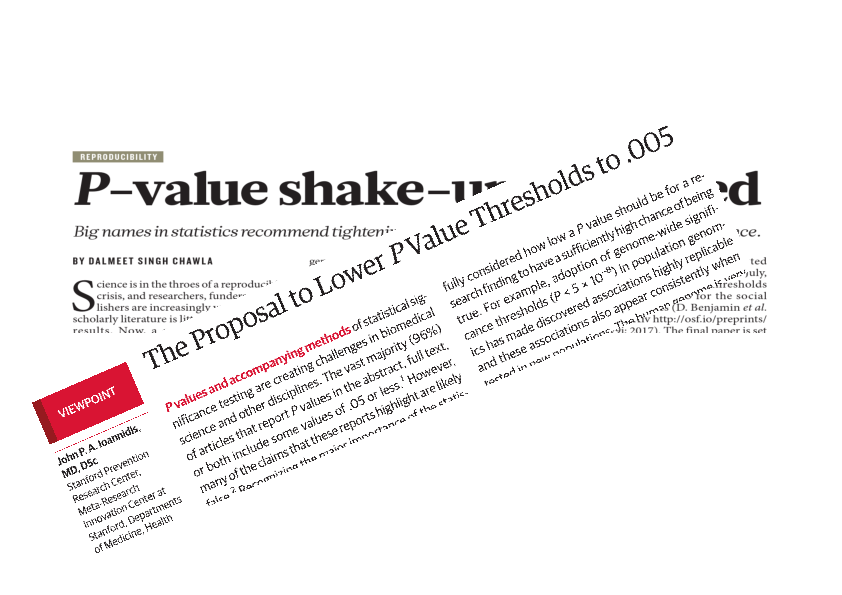
]p< 5 ???
.right[
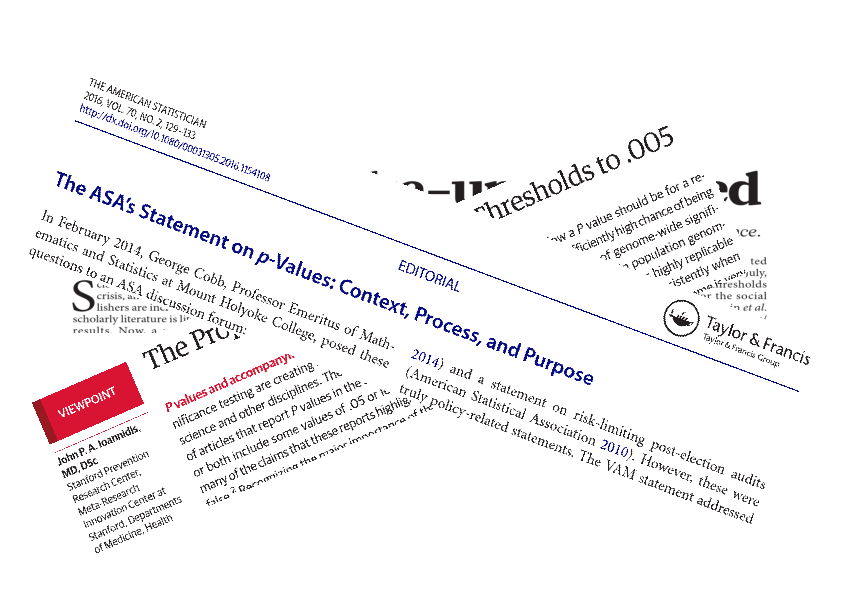
]CONCLUSION 1
.center[]
CONCLUSION 2
.center[]